= Un titre
== Un sous-titre
[WARNING]
--
Un warning multi-lignes
* item 1
* item 2
--Du néant à la galaxie Antora
Points de départ
Qui sommes nous ?
Nicolas : 🐦 @nicgiro
Qui sommes nous ?
Gautier : 🐦 @darkjabberwock
De l’utile…
Janvier 2017 : Début de projet "from scratch"
…à l’indispensable
Janvier 2018 : Récupération d’un projet historique
Une nécessité…
Déjà sensibilisé à la Doc As Code
…devenue vitale
Septembre 2017 : Arrivé sur un projet de moins d’un an
Le partage de connaissance
Zoom sur les équipes
Ca pourrait être pire…
Oui, mais…
Frustration
Difficultés de mises à jour
Pas ou peu de partage de connaissance
Il y a peut être une solution
Asciidoctor
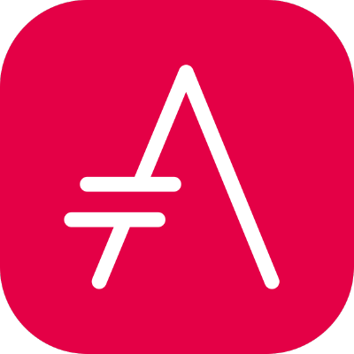
🐦 @asciidoctor
Pourquoi cet outil ?
Exemple de syntaxe
Parce que la doc ce n’est pas toujours un long fleuve tranquille…
Build & deploy
Gradle
asciidoctor {
backends 'html5', 'pdf'
dependsOn clean
sourceDir = file('src/asciidoc')
sources {
include '**/*.adoc'
exclude '**/content/**'
}
resources {
from (sourceDir) {
include '**/resources/**'
}
}
outputDir = file('build/docs')
}Dockerfile
FROM nginx
COPY build/docs/html5 /usr/share/nginx/htmlMais nos dépôts deviennent bordéliques
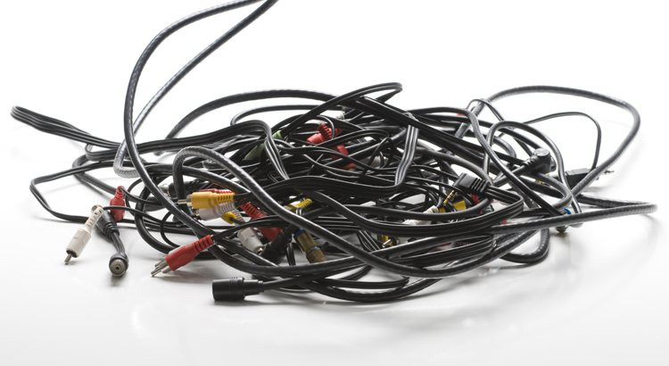
Une structuration partagée
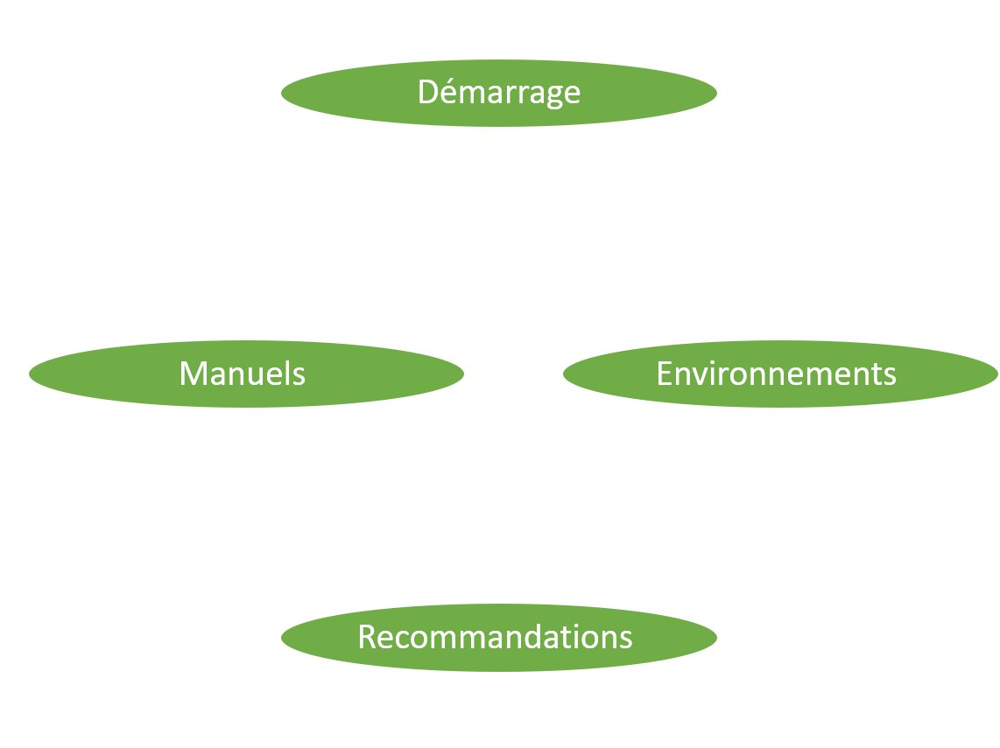
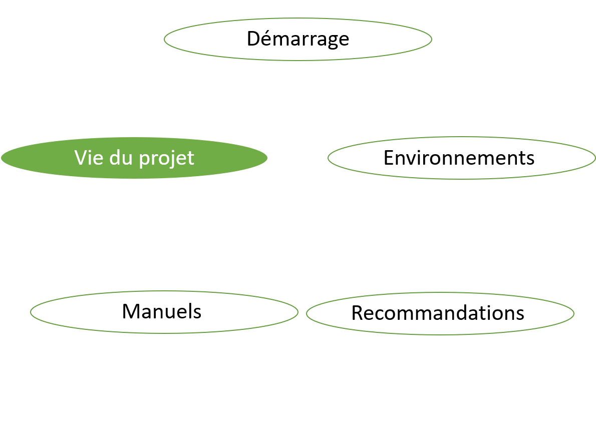
Et si on avait plusieurs dépôts ?
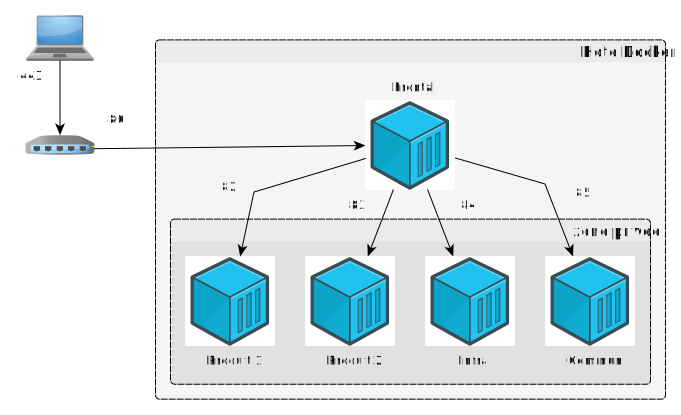
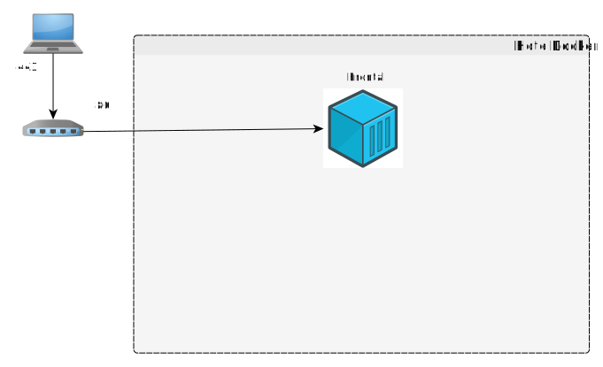
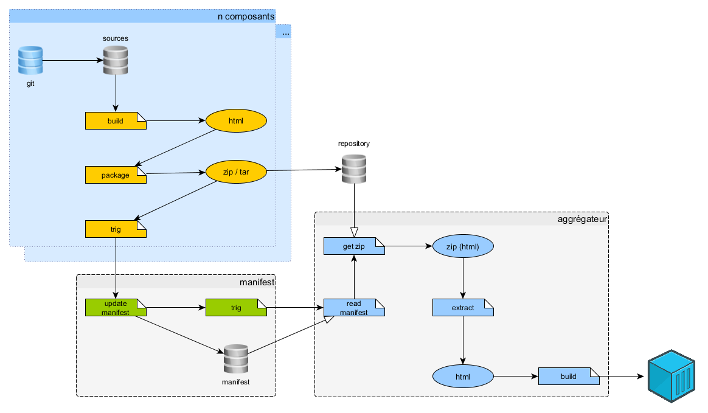
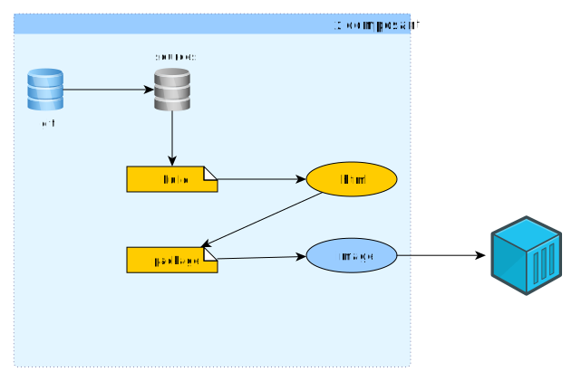
Antora

🐦 @antoraproject
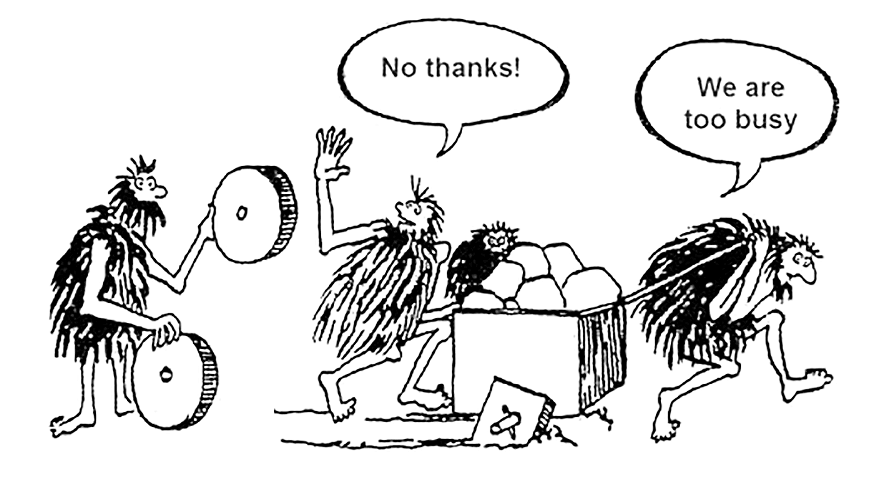
Antora
🐦 @antoraproject
L’aggrégateur ou playbook
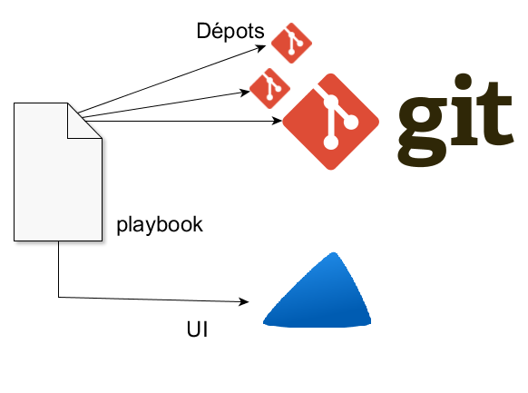
Les dépots
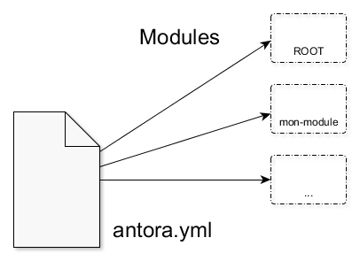
Les modules
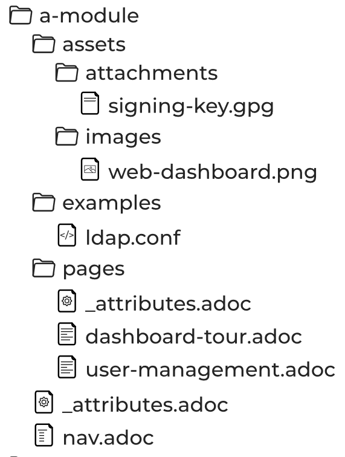
UI
handlebars.js
{{#if page.versions}}
<div class="page-versions">
<button class="versions-menu-toggle" title="Show other versions of page">{{page.componentVersion.displayVersion}}</button>
<div class="versions-menu">
{{#each page.versions}}
<a class="version
{{~#if (eq ./version @root.page.version)}} is-current{{/if~}}
{{~#if ./missing}} is-missing{{/if}}" href="{{{relativize @root.page.url ./url}}}">{{./displayVersion}}</a>
{{/each}}
</div>
</div>
{{/if}}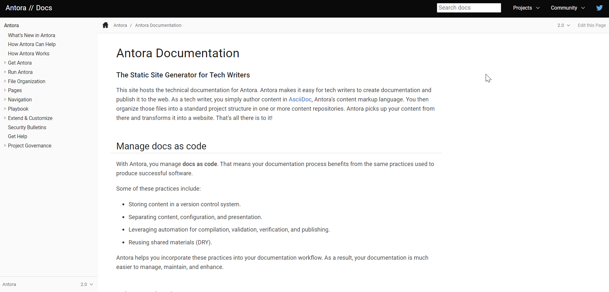
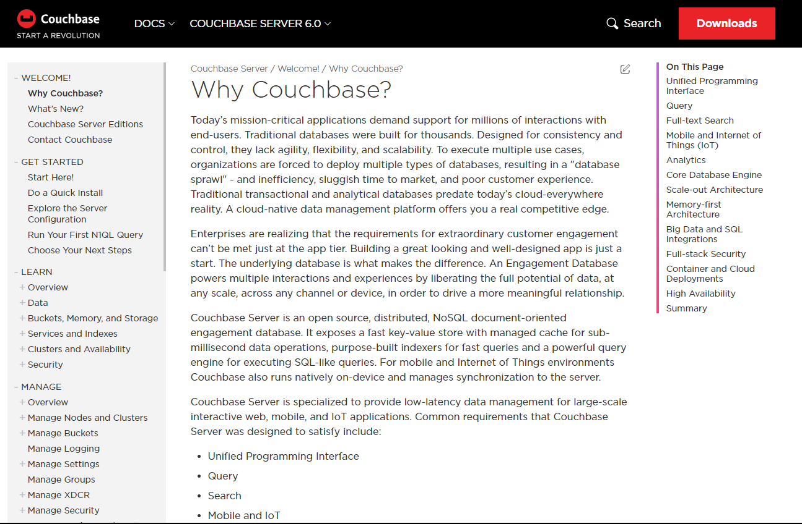
Regardons un projet…
Focus sur les liens
* xref:index.adoc[In-module page]
* xref:other-module:page.adoc[Page in the same component, but a different module]
*** xref:other-module:page.adoc#fragment[A deep link to a page in the same component, but a different module]
*** xref:other-component:module:page.adoc[Page in another component]L’intégration dans nos projets
Avoir la doc au plus près du code du produit
Mise en place des processus de dev sur la doc
Sécurisation des accès
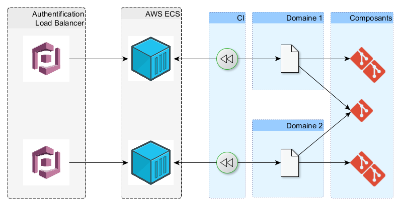
Pipeline
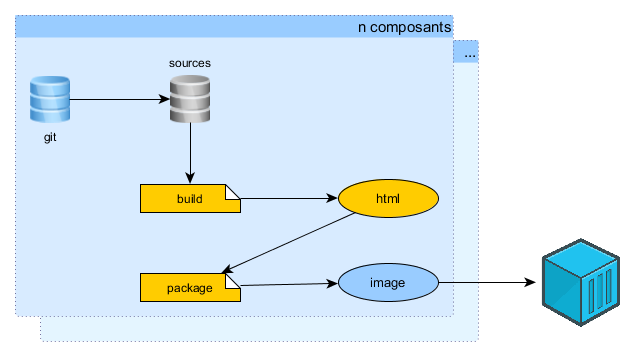
Les perspectives et limitations
Projet vivant
Version 2 publiée le 25 décembre 2018
Intégration d’un moteur de recherche
Doit être intégré manuellement pour le moment
Multi-langues
Améliorations en vrac
Pour aller plus loin
Plant UML
class BlockProcessor class DiagramBlock class DitaaBlock class PlantUmlBlock BlockProcessor <|-- DiagramBlock DiagramBlock <|-- DitaaBlock DiagramBlock <|-- PlantUmlBlock
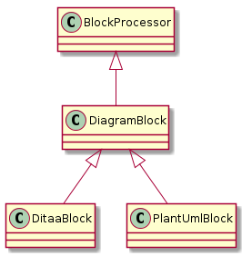
Les slidesdeck
RevealJS / Deckonf.io
Et bien d’autres…
Avez-vous des questions ?
Références
Documentation as Code (expliqué à mon père) par Hubert SABLONNIERE
https://www.youtube.com/watch?v=T6YJlaY0Dpw
@asciidoctor - https://asciidoctor.org/
@antoraproject - https://antora.org/
@revealjs - https://revealjs.com/#/